CCTV Discovery Tool
User Manual - Complete Guide for Beginners
Table of Contents
1. Introduction
Welcome to the CCTV Discovery Tool! This application helps you find and audit CCTV cameras and recording devices (NVRs/DVRs) on your network. Whether you're a security professional, IT administrator, or facility manager, this tool makes it easy to:
- Discover all CCTV cameras connected to your network
- Verify that cameras are working properly
- Collect important information about each camera (brand, model, video quality)
- Generate professional Excel reports for audits and documentation
What You'll Need
- A Windows computer connected to the same network as your cameras
- Camera login credentials (username and password)
- Basic knowledge of your network (IP addresses or network range)
2. Getting Started
2.1 Installation
The CCTV Discovery Tool comes as a portable application - no installation required!
How to Set Up
- Download the application ZIP file
- Extract (unzip) the contents to any folder on your computer
- You should see two items:
- CctvDiscovery.exe - The main application
- jre folder - Required files (do not delete)
The application folder contains the executable and jre folder
2.2 First Launch
To start the application:
- Double-click on CctvDiscovery.exe
- Wait a few seconds for the application to load
- The main window will appear, ready for use
Important Notes
- Keep the jre folder in the same location as the .exe file
- Do not rename or move files within the jre folder
- If Windows shows a security warning, click "Run anyway" - the application is safe
3. Understanding the Main Window
When you open the application, you'll see the main window divided into two areas:
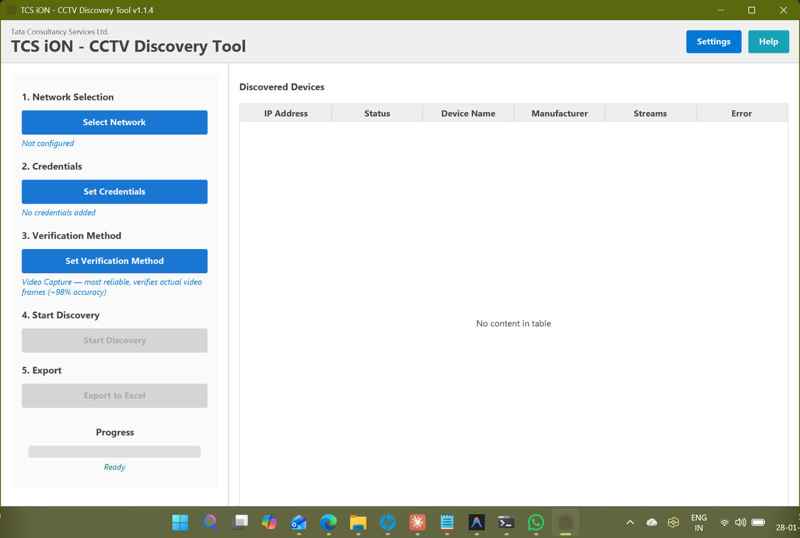The main window of CCTV Discovery Tool
Left Panel - Control Area
This is where you configure and control the discovery process. It's organized into 5 simple steps:
- Network Selection - Choose which network to scan
- Credentials - Enter camera login details
- Verification Method - Select how thoroughly to check cameras
- Start Discovery - Begin the scanning process
- Export - Save results to Excel
Right Panel - Results Table
This area shows all discovered devices with important details:
- IP Address - The device's network address
- Status - Current state of the device check
- Device Name - Name assigned to the camera
- Manufacturer - Brand of the camera (e.g., Hikvision, Dahua)
- Streams - Number of video streams found
- Error - Any problems encountered
Top Right Buttons
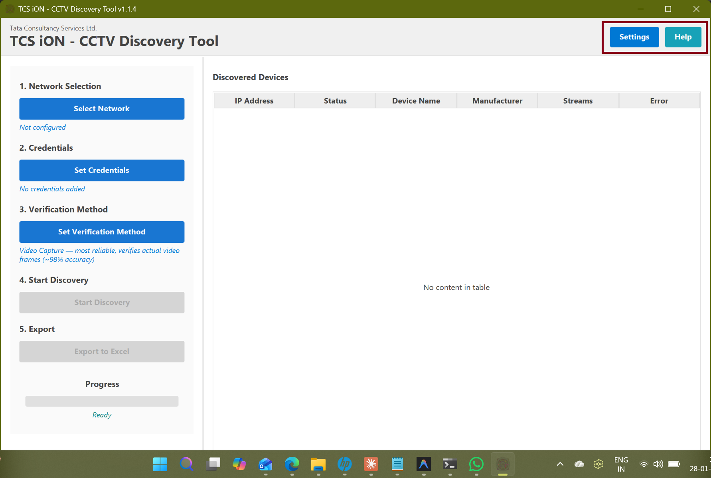Settings and Help buttons in the top-right corner
- - Opens advanced configuration options
- - Opens this user manual
4. Step-by-Step Guide
Follow these steps to discover and audit cameras on your network:
4.1 Step 1: Select Network
First, you need to tell the tool where to look for cameras. Click the "Select Network" button to open the network configuration dialog.
Simple Mode (Recommended for Beginners)
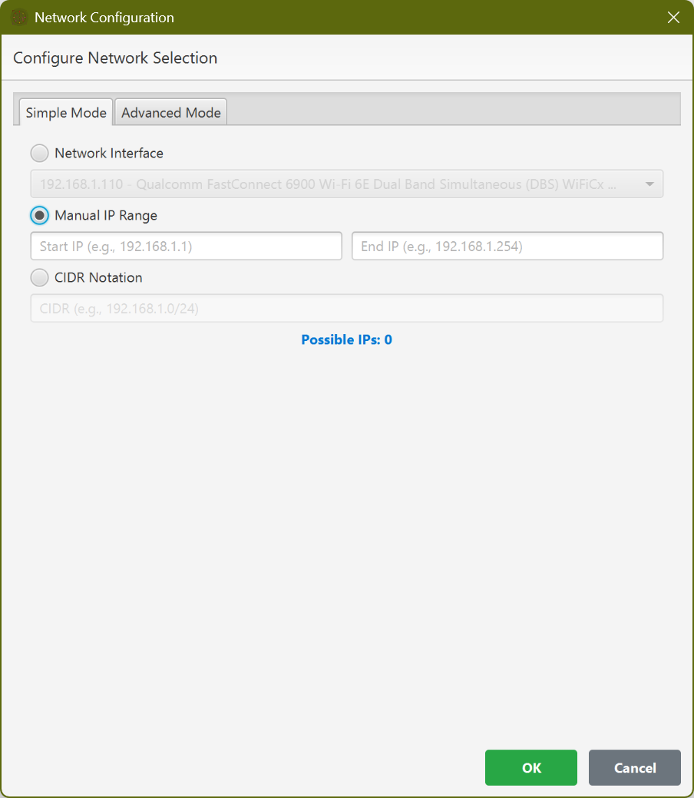Simple Mode for network selection
In Simple Mode, you have three options:
Option A: Network Interface (Easiest)
Select your network adapter from the dropdown list. The tool will automatically scan the entire network connected to that adapter.
Option B: Manual IP Range
Enter a specific range of IP addresses to scan:
- Start IP: The first IP address (e.g., 192.168.1.1)
- End IP: The last IP address (e.g., 192.168.1.254)
Option C: CIDR Notation
For technical users, enter a CIDR range like 192.168.1.0/24
Advanced Mode (For Complex Networks)
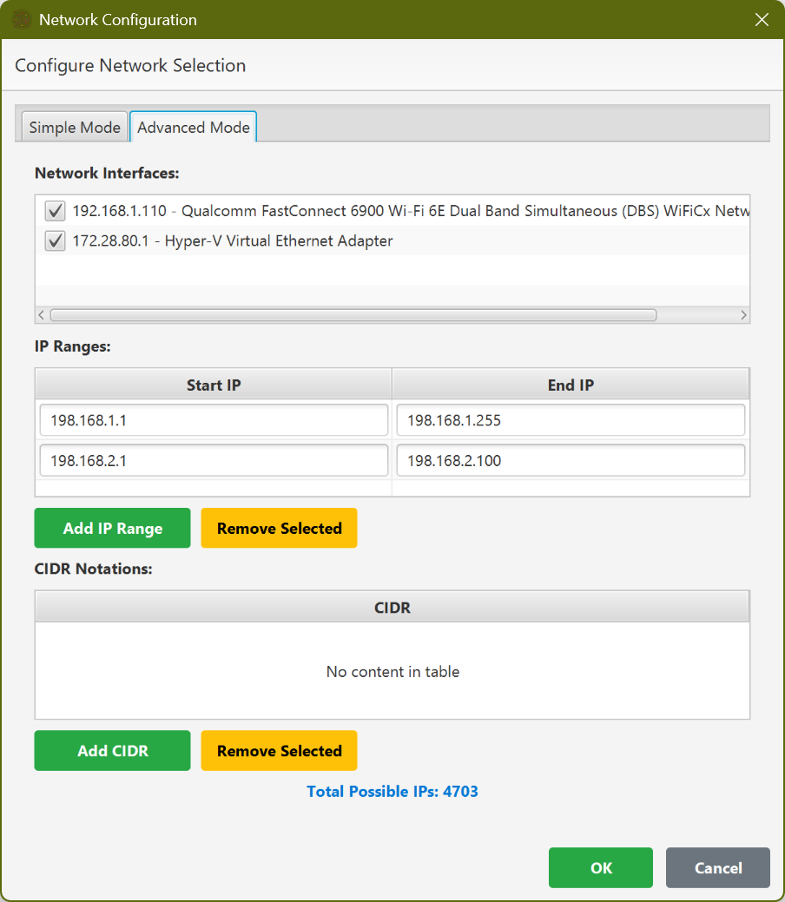Advanced Mode allows scanning multiple network ranges
Advanced Mode is useful when you need to scan multiple networks or specific IP ranges. You can:
- Select multiple network interfaces
- Add multiple IP ranges
- Add multiple CIDR notations
- See the total number of IPs to be scanned
Tip: How Many IPs to Scan?
The "Possible IPs" counter shows how many addresses will be checked. Scanning more IPs takes longer. For a typical office network, 254 IPs (a /24 network) takes about 2-5 minutes.
4.2 Step 2: Set Credentials
Most cameras require a username and password to access. Click "Set Credentials" to enter login details.
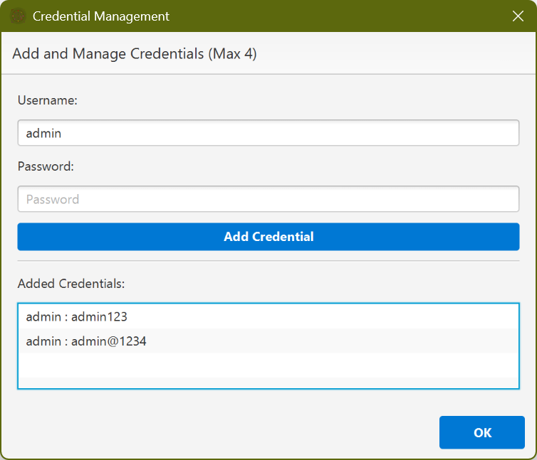Adding camera credentials
How to Add Credentials
- Enter the Username (e.g., "admin")
- Enter the Password
- Click "Add Credential"
- Repeat for other username/password combinations (up to 4)
- Click "OK" when finished
Why Multiple Credentials?
Different cameras on your network might have different passwords. You can add up to 4 credential pairs, and the tool will try each one until it finds one that works.
To edit or remove credentials, right-click on any entry in the list:
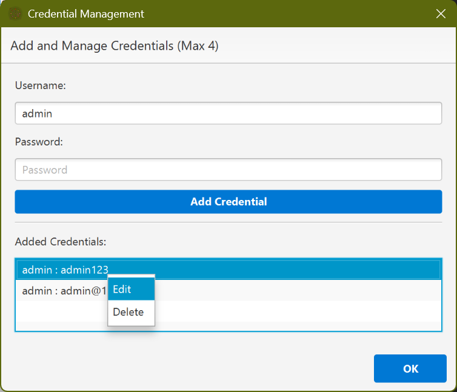Right-click to edit or delete credentials
Common Default Credentials
Many cameras use factory default usernames and passwords. Common ones include:
- Username:
admin| Password:admin - Username:
admin| Password:12345 - Username:
admin| Password:admin123
Security Note: If cameras still use default passwords, they should be changed immediately!
4.3 Step 3: Choose Verification Method
Click "Set Verification Method" to choose how thoroughly the tool checks each camera.
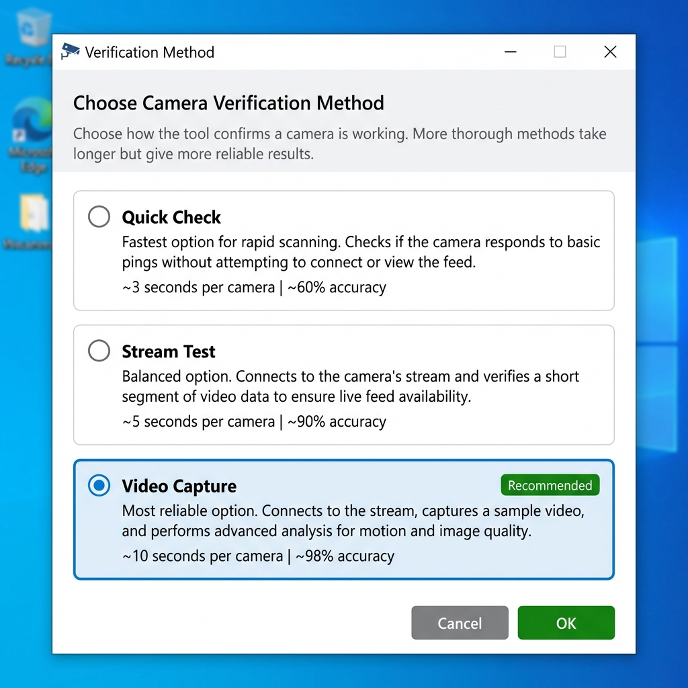Choose how to verify cameras are working
| Method | Speed | Accuracy | Best For |
|---|---|---|---|
| Quick Check | ~3 seconds per camera | ~60% | Fast preliminary scans |
| Stream Test | ~5 seconds per camera | ~90% | Routine checks |
| Video Capture (Recommended) | ~10 seconds per camera | ~98% | Official audits and reports |
Recommendation
Video Capture is recommended for audit purposes because it actually captures a video frame from each camera, confirming it's truly working. Use Quick Check only for initial network surveys.
4.4 Step 4: Start Discovery
Once you've configured the network and credentials, click "Start Discovery" to begin scanning.

Discovery in progress showing port scanning phase
The discovery process goes through several phases:
- Port Scanning - Finding devices that might be cameras
- Device Identification - Determining what type of device each one is
- Authentication - Logging into each camera with your credentials
- Stream Analysis - Checking video streams and quality
Processing discovered devices and checking their status
During Discovery
- The progress bar shows overall completion
- Status text describes what's currently happening
- Devices appear in the table as they're discovered
- Row colors change to show each device's status
4.5 Step 5: Review Results
When discovery completes, you'll see all found devices in the results table:
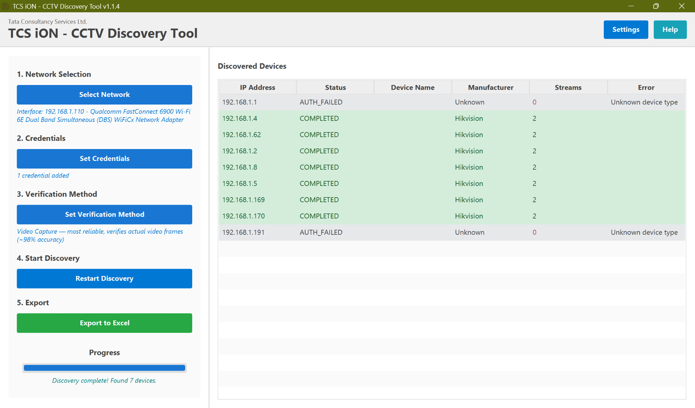Completed discovery showing devices with different statuses
The progress bar will show "Discovery complete!" with the number of devices found.
4.6 Step 6: Export Report
To save your results, click the green "Export to Excel" button.
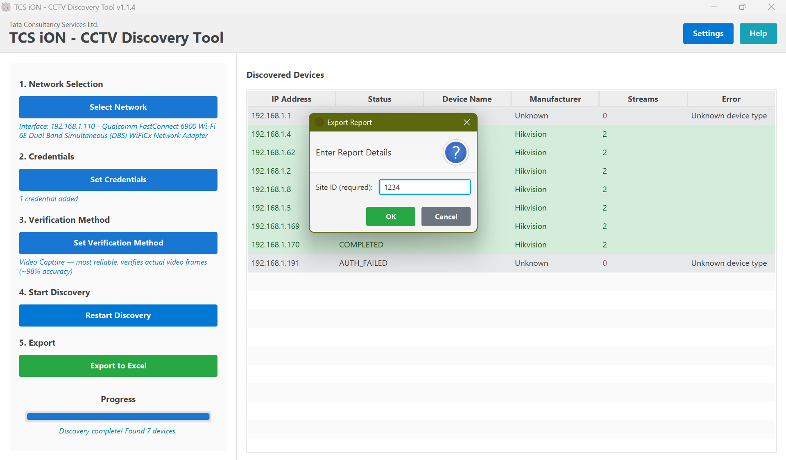Enter the Site ID for your report
Export Steps
- Click "Export to Excel"
- Enter a Site ID (required) - this identifies the location being audited
- Click "OK"
- Choose where to save the Excel file
- The report will be generated and saved
5. Understanding the Results
5.1 Color Codes
The results table uses colors to quickly show device status:
| Color | Meaning | What to Do |
|---|---|---|
| Green | Completed Successfully | Camera is working! No action needed. |
| Yellow | In Progress | Currently being checked. Wait for it to finish. |
| Red | Authentication Failed | Wrong username/password. Try different credentials. |
| Blue | Pending | Waiting to be processed. |
| Gray | Error/Unknown | Problem connecting to device. Check if it's online. |
5.2 Status Meanings
| Status | Description |
|---|---|
| PENDING | Device is waiting to be processed |
| SCANNING | Checking device ports and protocols |
| AUTHENTICATING | Trying to log in with provided credentials |
| ANALYZING | Checking video streams and quality |
| COMPLETED | Successfully checked - camera is working |
| AUTH_FAILED | Could not log in - credentials incorrect |
| ERROR | Something went wrong during checking |
5.3 Retrying Failed Devices
If some cameras show "AUTH_FAILED", you can retry them with different credentials:
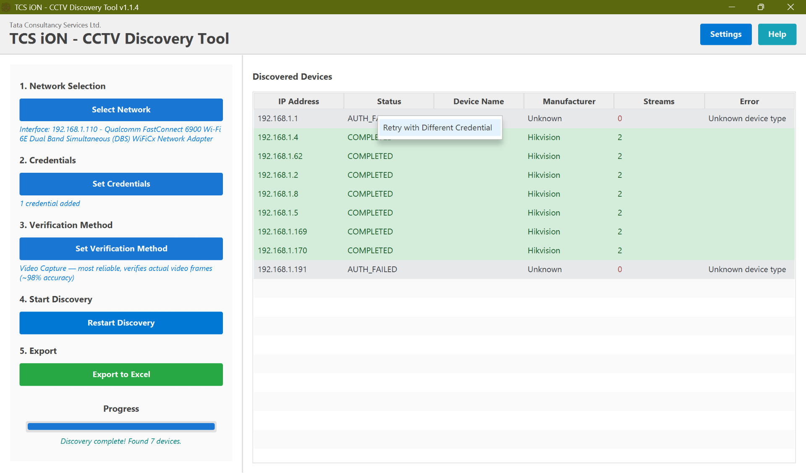Right-click on a failed device to retry with different credentials
How to Retry
- Right-click on a device with AUTH_FAILED status
- Select "Retry with Different Credential"
- Enter the correct username and password
- The device will be checked again with the new credentials
6. Settings
Click the "Settings" button in the top-right corner to access advanced options.
6.1 Port Configuration
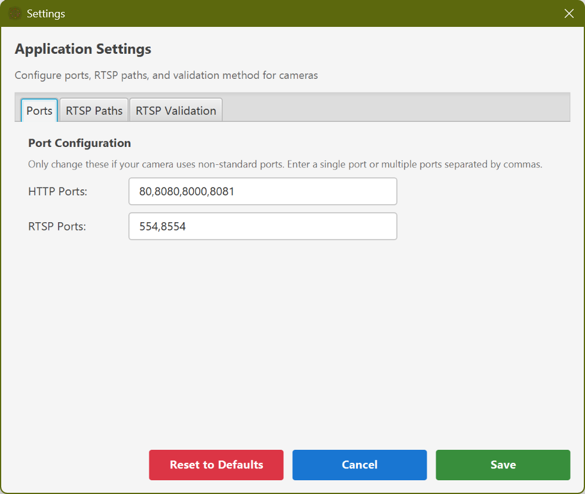Port configuration settings
Most users don't need to change these settings. Only modify them if your cameras use non-standard ports:
- HTTP Ports: Used for web interfaces (default: 80, 8080, 8000, 8081)
- RTSP Ports: Used for video streaming (default: 554, 8554)
When to Change Ports
Only change port settings if you know your cameras are configured to use different ports. Contact your IT administrator if you're unsure.
6.2 Custom RTSP Paths
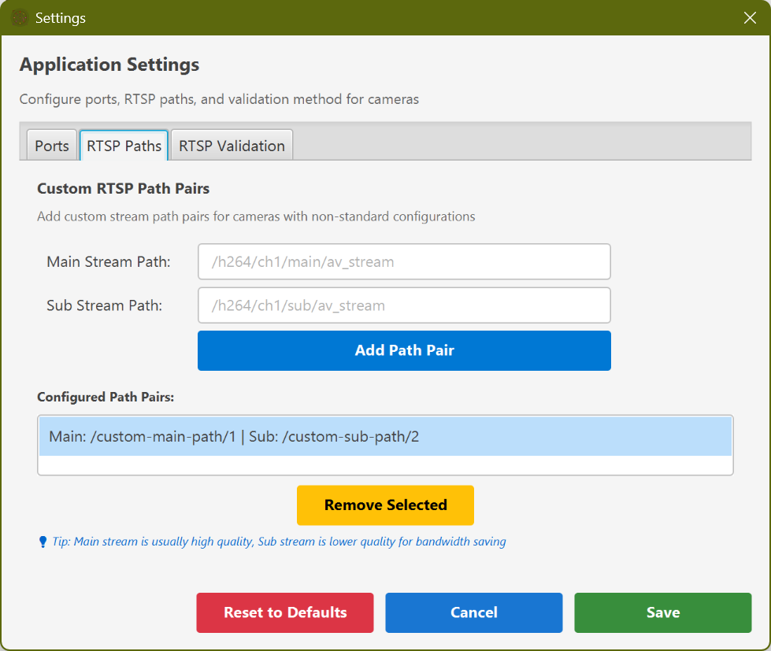Custom RTSP path configuration
RTSP paths tell the tool where to find video streams on each camera. The tool already knows paths for common camera brands, but you can add custom paths for unusual cameras.
Adding Custom Paths
- Enter the Main Stream Path (high quality video)
- Enter the Sub Stream Path (lower quality/bandwidth)
- Click "Add Path Pair"
Tip: Finding RTSP Paths
If you don't know your camera's RTSP path, check the camera manufacturer's documentation or search online for "[Camera Model] RTSP URL".
6.3 RTSP Validation Method
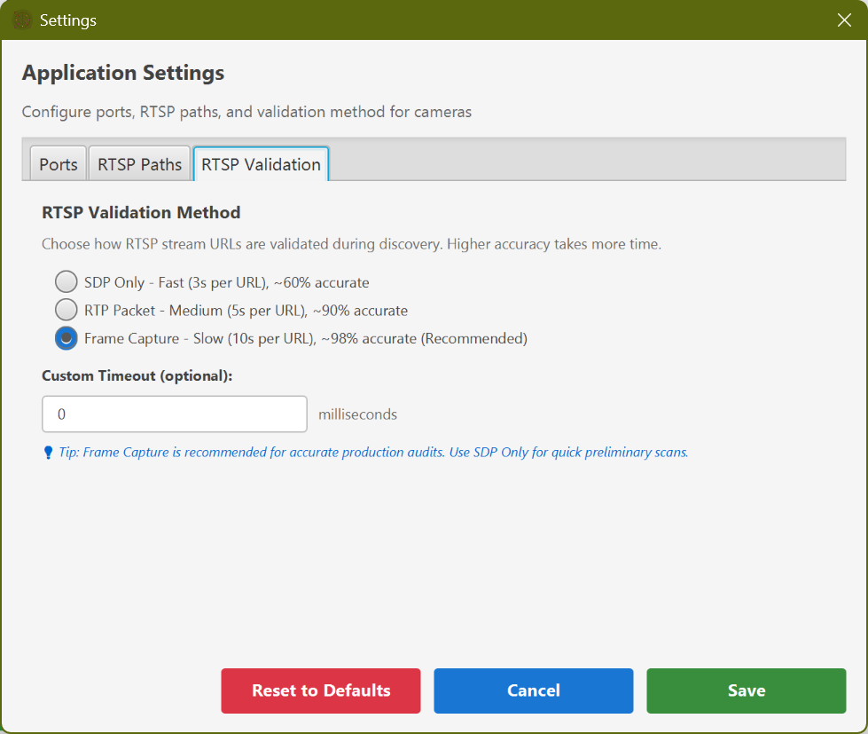RTSP validation method settings
This setting controls how the tool verifies RTSP streams. It's similar to the Verification Method but provides more technical control:
- SDP Only: Fastest, but may show non-working streams as valid
- RTP Packet: Balanced speed and accuracy
- Frame Capture: Most accurate, confirms actual video works
7. Understanding the Excel Report
The exported Excel report contains comprehensive information about all discovered devices.
CCTV Report Sheet
The main sheet contains the following columns:
| Column | Description |
|---|---|
| IP | Device's network address |
| MAC | Hardware address (unique identifier) |
| Name | Device name (if configured) |
| Type | Camera, NVR, DVR, etc. |
| Manufacturer | Brand name (Hikvision, Dahua, etc.) |
| Model | Specific model number |
| Serial Number | Device serial number |
| Time Diff | Time difference from computer (in seconds) |
| Username | Login username used |
| Password | Login password used |
| Error | Any error messages |
| Stream Name | Name of the video stream |
| RTSP URL | Full video stream URL with credentials |
| Resolution | Video resolution (e.g., 1920x1080) |
| Codec | Video format (H.264, H.265, etc.) |
| Profile | Codec profile (Baseline, Main, High) |
| Bitrate | Data rate in kbps |
| FPS | Frames per second |
Security Warning
The Excel report contains plaintext passwords and full RTSP URLs with embedded credentials. Handle this file with care and store it securely. The report is password-protected to prevent accidental editing.
Host Report Sheet
The second sheet contains information about the computer used for the audit, including:
- Computer name and operating system
- Hardware specifications (CPU, memory)
- Network adapters and IP addresses
- System time and NTP synchronization status
8. Troubleshooting
No Devices Found
Possible Causes and Solutions
- Wrong network selected: Make sure you selected the correct network interface or IP range
- Firewall blocking: Temporarily disable Windows Firewall or add an exception for the tool
- Cameras on different network: Ensure your computer is on the same network/VLAN as the cameras
- Cameras powered off: Verify cameras have power and network connectivity
All Devices Show AUTH_FAILED
Possible Causes and Solutions
- Wrong credentials: Double-check usernames and passwords
- Caps Lock on: Passwords are case-sensitive
- Account locked: Too many failed attempts may lock the camera account
- Different passwords: Different cameras may have different passwords - try adding multiple credential pairs
Discovery Takes Too Long
Possible Causes and Solutions
- Too many IPs: Reduce the IP range to scan
- Slow network: Network congestion can slow down scanning
- Use Quick Check: Switch to Quick Check verification method for faster results
Application Won't Start
Possible Causes and Solutions
- Missing jre folder: Ensure the jre folder is in the same directory as the .exe
- Antivirus blocking: Add an exception for CctvDiscovery.exe in your antivirus
- Windows SmartScreen: Click "More info" then "Run anyway" if Windows blocks the app
9. Frequently Asked Questions
Q: Is this tool safe to use?
Yes, the CCTV Discovery Tool only reads information from cameras - it doesn't modify any settings or configurations on your devices.
Q: Will this tool work with any camera brand?
The tool works with most ONVIF-compliant cameras and has specific support for popular brands including Hikvision, Dahua, Axis, CP Plus, Uniview, Hanwha/Samsung, Amcrest, Foscam, Vivotek, Bosch, Sony, and Panasonic.
Q: How do I know which credentials to use?
Use the username and password that you would use to log into the camera's web interface. If you don't know these, contact your IT administrator or check if default credentials are still in use (though defaults should be changed for security).
Q: Can I scan cameras on a different network/VLAN?
You need network connectivity to the cameras. If they're on a different VLAN, you'll need either:
- A computer connected to that VLAN
- Routing configured between VLANs
- A VPN connection to that network
Q: What does "Time Diff" mean in the report?
This shows how many seconds the camera's clock differs from your computer's clock. Large differences can cause issues with video recording timestamps and should be corrected.
Q: Why are some values highlighted in red in the Excel report?
Red highlighting indicates potential compliance issues:
- Non-standard resolution
- Codec other than H.264
- High profile codec (may require transcoding)
- Bitrate above 512kbps (high bandwidth usage)
Q: Can I use the RTSP URLs from the report to view cameras?
Yes! The RTSP URLs in the report include credentials and can be used directly in video players like VLC Media Player. Simply copy the URL and open it with "Media > Open Network Stream" in VLC.
Q: How do I unlock the Excel report to edit it?
The report is protected to prevent accidental changes. The password is automatically generated based on the number of devices and the date. Contact your administrator if you need to modify the report.